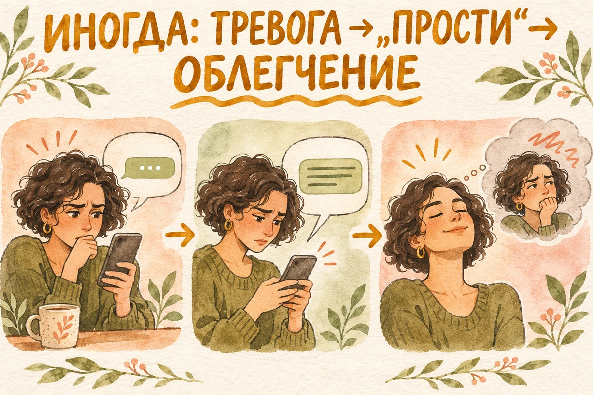
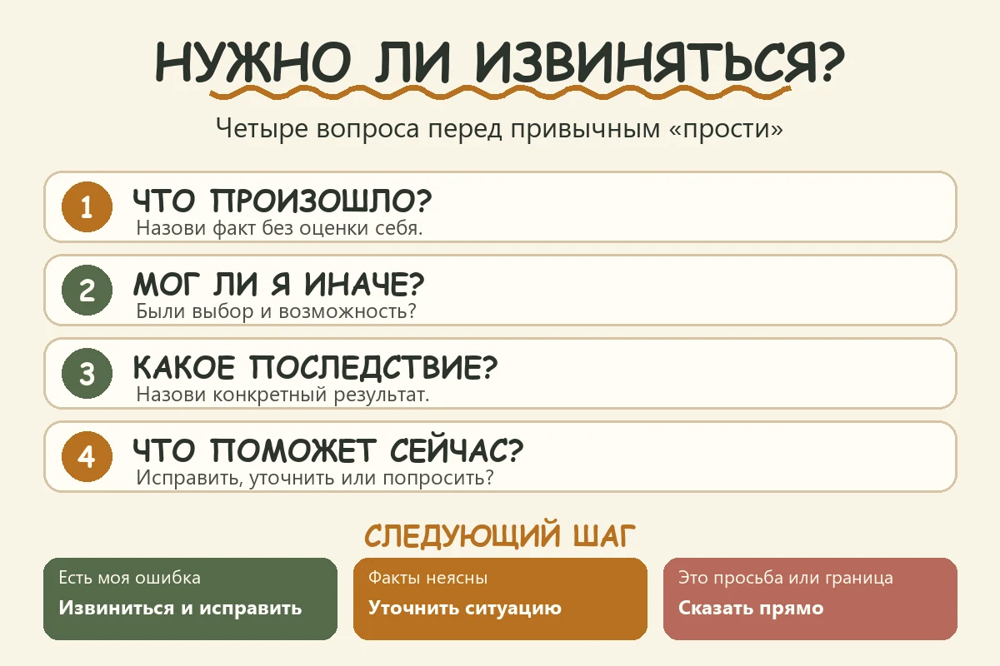

Главная → Блог → Частые извинения
Почему я постоянно извиняюсь, даже когда не виноват
14.11.2026 · 17 минут чтения
«Извини, можно спросить?» — пишете вы коллеге. «Прости, что отвлекаю», — говорите близкому человеку. Подруга отвечает чуть холоднее обычного, и вы уже перебираете в голове, что могли сделать не так. Иногда самое странное происходит позже: вы понимаете, что не совершили проступка, но всё равно чувствуете необходимость извиниться.
Вежливость помогает людям ладить. Но если «извини» становится пропуском к любой просьбе, за ним может стоять другой вопрос: имею ли я право занимать место, хотеть чего-то и иногда не нравиться другим? Разберёмся, откуда берётся эта привычка и почему перестать извиняться бывает сложнее, чем просто подобрать новую фразу.
- Извинение уместно, если вы нарушили договорённость или ваши действия причинили вред, даже без такого намерения. Просьба, несогласие и собственные чувства сами по себе не требуют извинения.
- Частое «прости» не говорит о диагнозе. Иногда это речевая привычка, иногда способ избежать недовольства, иногда реакция на отношения, в которых за обычные потребности вас критиковали.
- Перед извинением спросите себя: что произошло и чего я сейчас хочу — исправить вред или убедиться, что на меня не сердятся?
- Начинайте с безопасных ситуаций. Там, где отказ встречают угрозами или наказанием, важнее поддержка и безопасность, чем тренировка новых фраз.
- Когда частые извинения становятся проблемой
- Почему я постоянно извиняюсь: возможные причины
- Почему я чувствую себя виноватым, хотя ничего плохого не сделал
- Как понять, нужно ли действительно извиняться
- Что говорить вместо «извини»: шесть примеров
- Как перестать постоянно извиняться: практика на неделю
- Что делать, если вы перестали извиняться, а человек обижается
- Когда постоянные извинения становятся поводом обратиться за поддержкой
- Частые вопросы
- Главное
Когда частые извинения становятся проблемой
Представьте два сообщения. «Я обещал прислать файл вчера и забыл. Прости, задержал твою работу. Отправлю до шести». Здесь есть конкретное действие, его последствия и способ исправить ситуацию. А теперь: «Извини, что спрашиваю, можно ли мне получить файл, который нужен для работы?» Здесь просьба подаётся как проступок, хотя человек лишь уточняет необходимое.
Разница не в количестве произнесённых слов. Извиниться за случайный толчок в метро уместно: вы не хотели причинить неудобство, но оно произошло. Чужое разочарование из-за вашего вежливого отказа — другая ситуация: человеку может быть неприятно, хотя вы не нарушили договорённость. А когда человеку просто тяжело по причине, к которой вы не причастны, можно проявить сочувствие без признания вины. Тревожным сигналом становится необходимость извиняться, чтобы разрешить себе повседневное действие, и сильный страх, если вы этого не сделали.
Попробуйте заметить, что происходит сразу после слова «прости». Вам стало яснее, как исправить ситуацию? Или вы ждёте ответа «ты ничего плохого не сделал» и ненадолго успокаиваетесь? Иногда извинение работает как просьба о заверении. Исследования связывают поиск заверений с тревогой, но они не изучали частые извинения напрямую: одно исследовало ежедневные колебания тревоги и поиск заверений у молодых взрослых, другое — этот механизм у людей с тревожными расстройствами и ОКР (первое исследование, второе исследование). По одной речевой привычке нельзя судить о состоянии человека.
Быстрая проверка: «Если бы в этой ситуации оказался мой друг, я бы ждал от него извинений?» Ответ не решает всё за вас, но помогает увидеть двойной стандарт: другим можно просить о помощи, а себе — только после «простите за беспокойство».
Почему я постоянно извиняюсь: возможные причины
У этой привычки нет одной причины, которую можно угадать по фразе. У разных людей один и тот же автоматический ответ выполняет разную работу.
Страх чужого недовольства
Вам нужно попросить коллегу переделать часть общего проекта. Ещё до разговора появляется мысль: «Он решит, что я придираюсь». «Извини» оказывается способом смягчить возможную реакцию. Иногда это полезная вежливость. Но когда извинение необходимо даже для нейтрального вопроса, проблема уже не в формулировке — пугает сама возможность, что другому человеку не понравится ваша просьба.
При выраженном страхе критики человек может долго переживать до, во время и после общения. Это бывает при социальной тревоге, но частые извинения сами по себе не означают расстройства. Важны сила страха и то, насколько он мешает жизни (NHS). Если узнаёте себя, прочитайте также материал о социальной тревожности.
Правило «удобный человек не мешает»
«Если я хорошая дочь, я не должна расстраивать родителей». «Если я хороший коллега, я со всем справлюсь без помощи». Такие внутренние правила легко превращают обычную потребность в повод просить прощения. Не обязательно помнить, где вы их усвоили. Достаточно заметить правило сегодня и проверить, помогает ли оно жить. Материалы Центра клинических вмешательств описывают, как жёсткие правила о собственной ценности могут поддерживать низкую самооценку (CCI).
Если вам трудно отказать без чувства вины, это связано и с темой личных границ. Граница — не наказание другому. Это ясное сообщение о том, что вы можете и не можете сделать.
Стыд за саму просьбу
Вина обычно указывает на действие: «Я подвёл человека». Стыд охватывает личность целиком: «Я неудобный, со мной слишком много хлопот». При таком переживании хочется извиниться не за опоздание, а за то, что вы задаёте вопрос, занимаете время или нуждаетесь в помощи. Одной заменой слов здесь трудно обойтись: полезно заметить более глубокое убеждение, будто ваши потребности менее важны, чем чужие. Разницу между виной за поступок и стыдом за себя мы подробнее разбираем в статье о чувстве вины.
Опыт, в котором за ошибку приходилось долго расплачиваться
В некоторых семьях или отношениях чужая обида была непредсказуемой: человек замолкал, кричал, обвинял или требовал угадать, что не так. В такой обстановке извинение могло стать способом быстро снизить напряжение. Если подобный опыт был у вас, автоматическая реакция понятна. Но не стоит по одной привычке делать вывод о травме или искать «обязательно виноватого» в прошлом.
Важно и то, что происходит сейчас. Если партнёр приписывает вам ответственность за все свои чувства, а ваше «нет» встречает наказанием, индивидуальная работа над уверенностью не решит всё сама. Здесь нужны поддержка, возможность сверить происходящее с людьми вне этих отношений и оценка безопасности. О повторяющемся подрыве доверия к собственному восприятию мы пишем в статье о газлайтинге.
Привычка угадывать чужие мысли
Друг ответил коротко. Вы решаете: «Я его утомил», — и пишете: «Прости, что грузил тебя». Возможно, друг занят, устал или действительно хочет закончить разговор. Пока вы не спросили, это неизвестно. Автоматическое извинение заполняет пробел догадкой, а потом делает догадку похожей на факт.
Это не означает, что надо игнорировать реакцию другого. Можно проверить её без признания несуществующей вины: «Удобно сейчас поговорить?» или «Кажется, ты устал. Продолжим позже?» Так вы оставляете человеку возможность ответить за себя.
Речевая привычка и контекст
Иногда «извини» — просто короткий способ вежливо войти в разговор. В одной компании он привычен и никого не тяготит. В другой слово звучит как признание вины. Не нужно исправлять каждое «простите» и считать частоту извинений показателем психологического здоровья. Смотрите на цену привычки: можете ли вы спокойно попросить, отказаться и высказать мнение, если не прибавите к ним извинение?
Как узнать, что ближе именно вам
Вспомните последнее «прости» без явного проступка. Какая мысль больше похожа на вашу?
| Внутри звучало… | На что стоит обратить внимание |
|---|---|
| «Он рассердится или перестанет со мной общаться» | Возможно, извинение защищает от ожидаемого конфликта. |
| «Неудобно просить, я и так занимаю слишком много места» | Возможно, важнее исследовать стыд и представление о своих потребностях. |
| «Я сказал это, почти не заметив» | Возможно, это речевая привычка без сильного страха. |
| «С другими я спокоен, а рядом с ним всегда виноват» | Посмотрите на правила именно этих отношений и на реакцию человека на ваши просьбы и отказы. |
Это упражнение для самонаблюдения, а не тест: варианты могут сочетаться. Особенно обратите внимание на последнюю строку. Иногда дело не в «вашей неуверенности вообще», а в том, как устроено общение с конкретным человеком.
Почему я чувствую себя виноватым, хотя ничего плохого не сделал
Лена предложила Марине встретиться в субботу. Марина хочет отдохнуть дома и отвечает: «Сегодня не получится. Давай в другой день». Лена не пишет пару часов. Марина уже набрала «Прости, я ужасная подруга» и тянется нажать «отправить». В голове звучит знакомое: «Если она молчит, значит, я всё испортила».
Труднее всего выдержать неопределённость: человек ещё не ответил, а уже хочется срочно извиниться. Марина разумом понимает, что не нарушила обещание: встречи ещё не было в планах. Но чувство вины не исчезает по команде. Эмоциональная реакция может оставаться привычной ещё какое-то время после того, как вы научились оценивать ситуацию точнее. Цель практики — не немедленно перестать тревожиться, а постепенно перестать считать тревогу доказательством проступка.
Марина всё же отправляет извинение. Лена отвечает: «Всё в порядке». На несколько минут становится легче. Через неделю похожая пауза в переписке снова кажется угрозой. Это возможный сценарий, когда извинение работает как поиск успокоения; он не описывает все случаи частых извинений.
В таком эпизоде полезно различать три вещи:
- Моя ответственность: я ответила на приглашение и предложила другую дату. Нарушенной договорённости нет.
- Чужое чувство: подруга может огорчиться. Это важно услышать, но её разочарование не означает, что я обязана принять приглашение.
- Мой страх: пауза кажется угрозой отношениям. Страх реален как переживание, но он не сообщает мне, что именно думает подруга.
В следующий раз Марина решает не отправлять второе извинение сразу. Она оставляет подруге время ответить, а себе — возможность выдержать тревогу. Вечером Лена пишет, что была занята. Если бы Лена действительно огорчилась из-за отказа, это тоже можно было бы обсудить. Пауза помогла не делать вывод за неё заранее.

Как понять, нужно ли действительно извиняться
Попробуйте пройти четыре вопроса. Они полезнее правила «никогда не извиняйся первым».
Что произошло без оценочных слов? Не «я опять всем мешаю», а «я опоздал на двадцать минут и не предупредил». Или «я попросила перенести встречу за три дня».
Был ли у меня выбор и разумная возможность действовать иначе? Вы могли предупредить об опоздании. Но не могли заранее знать, что у собеседника был тяжёлый день, если он об этом не говорил.
Какое конкретное последствие моего действия я могу признать? «Ты ждал меня двадцать минут» — конкретно. «Я испортил тебе всю неделю» — вывод, который вы не можете сделать за другого.
Что поможет сейчас? Иногда достаточно признать промах. Иногда нужно вернуть деньги, переделать работу или изменить договорённость. А иногда достаточно задать вопрос, не присваивая себе вину: «Я заметил, что мы оба замолчали. Хочешь обсудить?»
Если ответ на первые вопросы неясен, не обязательно тут же произносить «извини» или убеждать себя, что вы точно правы. Можно сказать: «Я хочу понять, что тебя задело. Расскажи, пожалуйста». Это приглашение к разговору, а не автоматическое согласие со всеми обвинениями.
Проверка за десять секунд: я нарушил договорённость или причинил неудобство? Я сейчас прошу, отказываюсь или выражаю чувство? Я хочу что-то исправить или прежде всего убедиться, что на меня не сердятся? Ответ подскажет следующий шаг: извиниться, уточнить ситуацию либо сказать о своей потребности прямо.

Как извиниться, когда вы действительно причинили вред
Страх стать «человеком, который всегда извиняется», иногда приводит к другой крайности: не признавать даже очевидную ошибку. Разница между тревожным и ответственным извинением — в конкретности.
Вместо «Прости, я ужасный человек, пожалуйста, скажи, что ты меня не ненавидишь» попробуйте: «Я перебил тебя несколько раз. Понимаю, что так было трудно договорить мысль. Извини. В следующий раз дослушаю; если хочешь, сейчас вернёмся к тому, что ты говорил». Здесь нет требования, чтобы обиженный человек немедленно утешил вас.
Убедительное извинение обычно содержит признание действия, ответственности и попытку исправления. В интервью Американской психологической ассоциации исследовательница Карина Шуман объясняет, почему искренность и внимание к переживанию другого важнее красивой формулы. Не нужно копировать шаблон слово в слово. Важно, чтобы человек понял: вы услышали, что произошло и что собираетесь делать иначе.
Что говорить вместо «извини»: шесть примеров
Новая фраза должна точно передавать ваше намерение. Не стоит механически заменять каждое «извини» на «спасибо»: благодарность уместна, когда человек действительно помог или проявил терпение. Ниже — варианты для разных ситуаций.
| Автоматическая фраза | Более точная формулировка |
|---|---|
| «Извини, что отвлекаю» | «У тебя есть пять минут на вопрос?» |
| «Прости, что долго отвечала» | «Спасибо, что подождал. Теперь могу ответить». Если был обещанный срок и вы его сорвали: «Извини за задержку». |
| «Извини, можно я скажу?» | «У меня есть мысль. Можно добавлю?» |
| «Прости, что мне грустно» | «Мне сейчас грустно. Можешь немного побыть рядом?» |
| «Извини, я не смогу» | «Сегодня не смогу. Давай договоримся на другой день». Если вы нарушаете обещание: «Извини, что отменяю нашу договорённость». |
| «Прости, что спрашиваю снова» | «Мне нужна ясность по этому пункту. Можешь пояснить?» |
Эти фразы звучат спокойнее, потому что сообщают главное: вопрос, чувство, решение. Материалы CCI об ассертивности определяют её как ясное и прямое выражение своей позиции с уважением к другим. Цель здесь не стать жёстче или всегда добиваться своего, а говорить понятно без лишнего самообвинения.
NHS рекомендует практиковать умение говорить «нет» и отмечает, что постоянное согласие против желания может перегружать человека и вызывать раздражение (NHS). Начать можно с короткого отказа от новой просьбы. Отмену уже принятого обязательства лучше назвать отдельно и, если она создала неудобство, извиниться.
Как перестать постоянно извиняться: практика на неделю
Не ставьте цель «не извиниться ни разу». Она превращает обычную речь в экзамен и может усилить самокритику. Лучше исследовать, когда слово появляется и какую задачу выполняет.
День 1–2: наблюдение. Запишите три ситуации, где вы извинились автоматически. Для каждой отметьте: что произошло, чего вы испугались, был ли конкретный вред. Не исправляйте себя задним числом.
День 3–4: пауза. В одной безопасной ситуации задержитесь на два вдоха перед привычной фразой. Спросите: «Что я хочу сказать?» Если хотите спросить — задайте вопрос. Если хотите исправить ошибку — извинитесь.
День 5–6: один точный ответ. Выберите простую замену: «Удобно поговорить?», «Мне нужно время», «Сегодня не получится». Цель не в том, чтобы чувствовать себя уверенно сразу. Достаточно сказать ясно и посмотреть, что действительно произойдёт.
День 7: разбор без оценки. Какая ситуация оказалась труднее — просьба, отказ или чужая пауза? Что вы предсказывали и что произошло? Возможно, человек действительно расстроился. Тогда важно не обесценивать это, а проверить: вы причинили вред, нарушили договор или столкнулись с допустимым разочарованием другого?
Если вы привыкли анализировать каждую свою реплику часами, такая практика может сама стать поводом для самокритики. Тогда сделайте запись короткой: один эпизод, два предложения, один вывод. Полезно также прочитать, как остановить прокручивание разговоров в голове.
Что делать, если вы перестали извиняться, а человек обижается
Реакция другого может означать разное. Вы причинили неудобство или нарушили обещание: собеседник ждёт признания конкретного поступка, и извинение здесь уместно. Вы отказали в новой просьбе: человек вправе огорчиться, но огорчение не делает отказ проступком. Вас обвиняют без конкретики и требуют извиниться прежде, чем говорить: попробуйте уточнить, какое действие имеется в виду, и посмотрите, возможен ли разговор на равных. Одно недовольство само по себе не доказывает ни вашу вину, ни чужую манипуляцию.
Когда человек перестаёт автоматически извиняться, окружающие иногда слышат это как резкость: «Раньше ты говорил мягче». Можно объяснить перемену: «Я замечаю, что часто прошу прощения даже за обычный вопрос. Хочу говорить точнее. Если я действительно задену тебя, скажи — я готов это обсудить». Когда претензия конкретна, её проще проверить, чем общий упрёк «ты никогда не думаешь обо мне».
В отношениях, где есть взаимность, такое объяснение помогает. В отношениях, где извинение требовали как знак подчинения, на перемену могут ответить давлением. Не спорьте о «правильных формулировках», если вопрос на самом деле в контроле. Поговорите с тем, кому доверяете, и оцените, что поможет вам оставаться в безопасности.
Когда постоянные извинения становятся поводом обратиться за поддержкой
Помощь уместна, если страх чужого недовольства мешает учиться, работать, отказывать, строить отношения; если после каждого разговора вы долго ищете подтверждение, что вас не отвергли; если извинения возникают рядом с постоянным напряжением или самокритикой. Психолог или психотерапевт поможет разобраться, какие ситуации запускают реакцию и как постепенно пробовать другой способ общения. При выраженной тревоге полезно обратиться и к врачу за оценкой состояния и подходящей помощью; NHS указывает, что при социальной тревоге доступны разговорные методы лечения, включая КПТ (NHS).
Если за вашим «прости» стоит страх угроз, наказания или насилия дома, начните с безопасности и поддержки доверенных людей или местных служб помощи. Не нужно испытывать на себе советы по ассертивности в ситуации, где прямой отказ может повысить риск.
Попробуйте разобрать один разговор. Вспомните, после какого разговора вам хотелось извиниться. Что вы действительно сказали, о чём лишь догадались и какой реакции испугались? Если сложно разделить эти части самостоятельно, опишите эпизод в AI Therapist. Начните с вопроса: «Мне хочется извиниться, хотя я не понимаю, что сделал не так. Помоги отделить факты от моих предположений».
Ответ поможет подготовить спокойный разговор; решение о своей ответственности остаётся за вами. AI Therapist — инструмент самопомощи, он не заменяет специалиста и не определяет, кто прав. Если рядом с человеком вы боитесь угроз или наказания, сначала обратитесь за живой поддержкой и подумайте о безопасности.
Скачать AI Therapist в RuStoreЧастые вопросы
Нормально ли часто говорить «извините» из вежливости?
Да. В разных семьях, командах и культурах слова вежливости звучат с разной частотой. Ориентир — не подсчёт извинений, а возможность говорить о своих потребностях и не считать любую просьбу проступком.
Как перестать извиняться, если мне страшно показаться грубым?
Начните с одной безопасной ситуации и замените автоматическое извинение точной фразой: «У тебя есть минутка?», «Мне нужно уточнить», «Сегодня не смогу». Вежливый тон и внимание к собеседнику сохраняются. Не требуется сразу перестать тревожиться.
Нужно ли извиняться, если человек обиделся, хотя я не хотел его задеть?
Вы можете признать результат, даже если не было намерения причинить боль: «Я вижу, что мои слова тебя задели. Хочу понять как». Затем разберите конкретное действие. Чужое чувство важно, но само по себе не доказывает, что вы обязаны согласиться с любой трактовкой событий.
Что делать, если я уже извинился, а облегчение быстро прошло?
Спросите, осталось ли что-то, что вы можете исправить. Если нет, возможно, вам сейчас нужна уверенность в том, как к вам относятся, а не ещё одно извинение. Попробуйте назвать этот страх прямо, сделать паузу и вернуться к фактам. Если круг повторяется часто и мешает жить, обсудите это со специалистом.
Почему я извиняюсь, хотя понимаю, что не виноват?
Понимание и эмоциональная реакция могут меняться с разной скоростью. Вы уже знаете, что вправе отказаться, а тело и мысли всё ещё реагируют на возможное недовольство как на угрозу. Это не доказательство вины. Начните с небольшой паузы в безопасной ситуации и проверьте, что произошло после ясного ответа без автоматического извинения.
Можно ли сказать «мне жаль», не признавая вину?
Да, если вы сочувствуете человеку: «Мне жаль, что тебе сейчас тяжело». Если речь о вашем конфликте, избегайте фразы, которая звучит как «мне жаль, что ты так реагируешь». Лучше начать с конкретики: «Я вижу, что этот разговор тебя задел. Хочу понять, что произошло». Если вам приписывают вину без объяснения, можно добавить: «Я готов это обсудить, но пока не понимаю, какое моё действие ты имеешь в виду».
Главное
Извинение помогает восстановить связь после конкретного поступка. Просьба или отказ в нём не нуждаются. Прежде чем сказать «прости», остановитесь на несколько секунд: что произошло, за что я отвечаю и что хочу сообщить? Иногда ответом будет искреннее извинение. Иногда — ясный вопрос или спокойное «нет».
Источники
- Centre for Clinical Interventions: Assertiveness — практические материалы о прямом и уважительном общении.
- CCI: Adjusting Rules and Assumptions — роль жёстких правил в поддержании низкой самооценки.
- NHS: Raising low self-esteem — рекомендации о праве говорить «нет» и вариантах поддержки.
- NHS: Social anxiety — симптомы, помощь и лечение при выраженном страхе социальной оценки.
- APA: Why you should apologize even when it’s hard to — разговор с исследовательницей извинений Кариной Шуман.
- Reassurance seeking in anxiety disorders and OCD и daily anxiety and reassurance seeking — исследования связи тревоги с поиском заверений; не используются как способ самодиагностики.
Как подготовлен материал. Редакция AI Therapist опиралась на перечисленные исследования и материалы CCI, NHS и APA. Примеры условные. Статья носит просветительский характер и не заменяет консультацию специалиста.
О проекте — на отдельной странице.